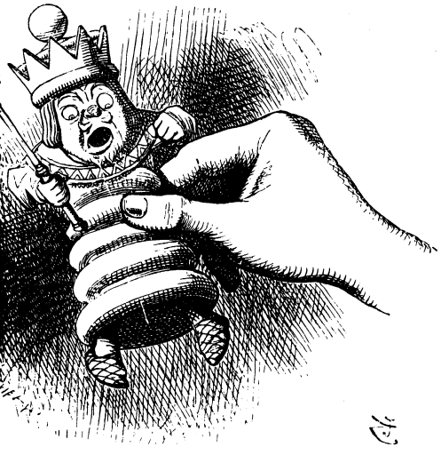
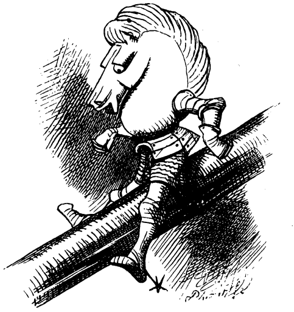
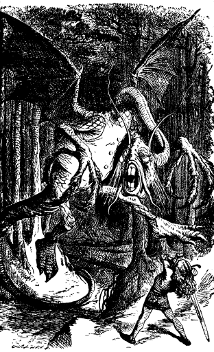
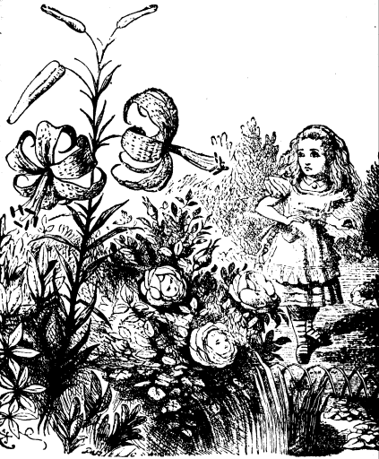

"I SHOULD see the garden far better," said Alice to herself, "if I could get to the top of that hill: and here's a path that leads straight to it--at least, no, it doesn't do that---" (after going a few yards along the path, and turinng several sharp corners), "but I suppose it will at last. But how curiously it twists! It's more like a corkscrew than a path! Well, this turn goes to the hill, I suppose--no, it doesn't! This goes straight back to the house! Well then, I'll try it the other way."
And so she did: wandering up and down, and "trying turn after turn, but always coming back to the house, do what she would. Indeed, once, when she turned a corner rather more quickly than usual, she ran against it before she couId stop herself.
"It's no use talking about it," Alice said, looking up at the house and pretending it was arguing with her. "I'm not going in again yet. I know I should have to get through the Looking-glass again--back into the old room--and there'd be an end of all my adventures!"
So, resolutely turning her back upon the house she set out once more down the path, determined to keep straight on till she got to the hill. For a few minutes all went on well, and she was just saying, "I really shall do it this time---" when the path gave a sudden twist and shook itself (as she described it afterwards), and the next moment she found herself actually walking in at the door.
"Oh, it's too bad!" she cried. "I never saw such a house for getting in the way! Never!"
However, there was the hill full in sight, so there ywas nothing to be done but start again. This time she came upon a large flower-bed, with a border of daisies, and a willow-tree growing in the middle.
"O Tiger-lily," said Alice, addressing herself to one that was waving gracefully about in the wind, "I wish you could talk!"
"We can talk," said the Tiger-lily: "when there's anybody worth talking to."
Alice was so astonished that she couldn't speak for a minute: it quite seemed to take her breath away. At length, as the Tiger-lily only went on waving about, she spoke again, in a timid voice-- almost in a whisper. "And can all the flowers talk?"
"As well as you can," said the Tiger-lily. "And a great deal louder."
"It isn't manners for us to begin, you know," said the Rose, "and I really was wondering when you'd speak! Said I to myself. "Her face has got some sense in it, though it's not a clever one!' Still you're the right colour, and that goes a long way."
"I don't care about the colour," the Tiger-lily remarked. "If only her petals curled up a little more, she'd be all right."
Alice didn't like being criticised, so she began asking questions: "Aren't you sometimes frightened at being planted out here, with nobody to take care of you?"
"There's the tree in the middle," said the Rose. "What else is it good for?"
"But what could it do, if any danger came?" Alice asked.
"It could bark," said the Rose.
"It says "Bough-wough," cried a Daisy: "that's why its branches are called boughs!"
"Didn't you know that?" cried another Daisy, and here they all began shouting together, till the air seemed quite full of little shrill voices. "Silence, every one of you!" cried the Tiger-lily, waving itself passionately from side to side, and trembling with excitement. "They know I can't get at them!" panted, bending its quivering head towards Alice, "or they wouldn't dare do it!"

"Never mind!" Alice said in a soothing tone, and stooping down to the daisies, who were just be ginning again, she whispered, "If you don't hold your tongues, I'll pick you!"
There was silence in a moment, and several of the pink daisies turned white.
"That's right!" said the Tiger-lily. "The daisies are worst of all. When one speaks, they all begin together, and it's enough to make one wither to hear the way they go on!"
"How is it you can all talk so nicely?" Alice said, hoping to get it into a better temper by a compliment. "I've been in many gardens before, but none of the flowers could talk."
"Put your hand down, and feel the ground," said the Tiger-lily. "Then you'll know why."
Alice did so. "It's very hard," she said, "but I don't see what that has to do with it."
"In most gardens," the Tiger-lily said, "they make the beds too soft--so that the flowers are always asleep."
This sounded a very good reason, and Alice was quite pleased to know it. "I never thought of that before!" she said.
"It's my opinion you never think at all," the Rose said in a rather severe tone.
"I never saw anybody that looked stupider," a Violet said, so suddenly, that Alice quite jumped; for it hadn't spoken before.
"Hold your tongue!" cried the Tiger-lily. "As if you ever saw anybody! You keep your head under the leaves, and snore away there till you know no more what's going on in the world, than if you were a bud!"
"Are there any more people in the garden besides me?" Alice said, not choosing to notice the Rose's last remark.
"There's one other flower in the garden that can move about like you," said the Rose. "I wonder how you do it---" ("You're always wondering," said the Tiger-lily), "but she's more bushy than you are."
"Is she like me?" Alice asked eagerly, for the thought crossed her mind. "There's another little girl in the garden somewhere!"
"Well, she has the same awkward shape as you," the Rose said: "but she's redder--and her petals are shorter, I think."
"They're done up close, like a dahlia," said the Tiger-lily: "not tumbled about, like yours."
"But that's not your fault," the Rose added kindly: "you're beginning to fade, you know--and then one can't help one's petals getting a little untidy."
Alice didn't like this idea at all: so, to change the subject, she asked, "Does she ever come out here ?"
"I daresay you'll see her soon," said the Rose, "She's one of the thorny kind."
"Where does she wear the thorns?" Alice asked with some curiosity.
"Why, all round her head, of course," the Rose replied. "I was wondering you hadn't got some too. I thought it was the regular rule."
"She's coming!" cried the Larkspur. "I hear her footstep, thump, thump, along the gravel-walk!"
Alice looked round eagerly, and found that it was the Red Queen. "She's grown a good deal!" was her first remark. She had indeed: when Alice first found her in the ashes, she had been only three inches high--and here she was, half a head taller than Alice herself!
"It's the fresh air that does it," said the Rose: "wonderfully fine air it is, out here."
"I think I'll go and meet her," said Alice, for, though the flowers were very interesting, she felt that it would be far grander to have a talk with a real Queen.
"You can't possibly do that," said the Rose: "I should advise you to walk the other way."
This sounded nonsense to Alice so she said nothing, but set off at once towards the Red Queen. To her surprise, she lost sight of her in a moment, and found herself walking in at the front-door again.
A little provoked, she drew back and, after looking everywhere for the Queen (whom she spied out at last, a long way off), she thought she would try the plan, this time, of walking in the opposite direction.
It succeeded beautifully. She had not been walking a minute before she found herself face to face with the Red Queen, and full in sight of the hill she had been so long aiming at.
"Where do you come from?" said the Red Queen. "And where are you going? Look up, speak nicely, and don't twiddle your fingers all the time."
Alice attended to all these directions, and explained, as well as she could, that she had lost her way.
"I don't know what you mean by your way," said the Queen: "all the ways about here belong to me--but why did you come out here at all?" she added in a kinder tone. "Curtsey while you're thinking what to say. It saves time."
Alice wondered a little at this, but she was too much in awe of the Queen to disbelleve it. "I'll try it when I go home," she thought to herself, "the next time I'm a little late for dinner."
"It's time for you to answer now," the Queen said, looking at her watch: "open your mouth a little wider when you speak, and aiways say "your Majesty."
"I only wanted to see what the garden was like, your Majesty---"
"That's right," said the Queen, patting her on the head, which Alice didn't like at all: "though, when you say "garden,' I've seen gardens, compared with which this would be a wilderness."
Alice didn't dare to argue the point, but went on: "--and I thought I'd try and find my way to the top of that hill---"
"When you say "hill,' " the Queen interrupted, "I could show you hills, in comparison with which you'd call that a valley."

"No, I shouldn't," said Alice, surprised into contradicting her at last: "a hill can't be a valley, you know, That would be nonsense---"
The Red Queen shook her head. "You may call it `nonsense' if you llke," she said, "but I've heard nonsense, compared with which that would be as sensible as a dictionary!"
Alice curtseyed again, as she was afraid from the Queen's tone that she was a little offended: and they walked on in silence till they got to the top of the little hill.
For some minutes Alice stood without speaking, looking out in all directions over the country--and a most curious country it was. There were a number of little brooks running across from side to side, and the ground between was divided up into squares by a number of hedges, that reached from brook to brook.
"I declare it's marked out just like a large chessboard!" Alice said at last. "There ought to be some men moving about somewhere--and so there are!" she added in a tone of delight, and her heart began to beat quick with excitement as she went on. "It's a great game of chess that's being played--all over the world--if this is the world at all, you know. Oh, what fun it is! How I wish I was one of them! don't mind being a Pawn, if only I might join-- though of course I should like to be a Queen, best."

She glanced rather shyly at the real Queen as she said this, but her companion only smiled pleasantly, and said, "That's easily managed. You can be the White Queen's Pawn, if you like, as Lily's too young to play; and you're in the Second Square to begin with: when you get into the Eighth Square you'll be a Queen---" Just at this moment, somehow or other, they began to run.

Alice never could quite make out, in thinking it over afterwards, how it was that they began: all she remembers is, that they were running hand in hand, and the Queen went so fast that it was all she could do to keep up with her: and still the Queen kept crying "Faster!" but Alice felt she could not go faster, though she had no breath to say so.
The most curious part of the thing was, that the trees and the other things round them never changed their places at all: however fast they went, they never seemed to pass anything. "I wonder if all the things move along with us?" thought poor puzzled Alice. And the Queen seemed to guess her thoughts, for she cried, "Faster! Don't try to talk!"
Not that Alice had any idea of doing that. She felt as if she would never be able to talk again, she was getting so out of breath: and still the Queen cried, "Faster! Faster!" and dragged her along. "Are we nearly there?" Alice managed to pant out at last.
"Nearly there!" the Queen repeated. "Why, we passed it ten minutes ago! Faster!" And they ran on for a time in silence, with the wind whistling in Alice's ears, and almost blowing her hair off her head, she fancied.
"Now! Now!" cried the Queen. "Faster! Faster!" And they went so fast that at last they seemed to skim through the air, hardly touching the ground with their feet, till suddenly, just as Alice was getting quite exhausted, they stopped, and she found herself sitting on the ground, breathless and giddy.
The Queen propped her against a tree, and said kindly, "You may rest a little now."
Alice looked round her in great surprise. "Why, I do believe we've been under this tree all the time! Everything's just as it was!"
"Of course it is," said the Queen: "what would you have it?"
"Well, in our country," said Alice, still panting a little, "you'd generally get to somewhere else--if you ran very fast for a long time, as we've been doing."
"A slow sort of country!" said the Queen. "Now, here, you see, it takes all the running you can do, to keep in the same place. If you want to get somewhere else, you must run at least twice as fast as that!"
"I'd rather not try, please!" said Alice. "I'm quite content to stay here--only I am so hot and thirsty! "
"I know what you'd like!" the Queen said goodnaturedly, taking a little box out of her pocket, "Have a biscuit?"
Alice thought it would not be civil to say "No," though it wasn't at all what she wanted. So she took it, and ate it as well as she could: and it was very dry; and she thought she had never been so nearly choked in all her life.
"While you're refreshing yourself," said the Queen, "I'll just take the measurements." And she took a ribbon out of her pocket, marked in inches, and began measuring out the ground, and sticking little pegs in here and there.
"At the end of two yards," she said, putting in a peg to mark the distance, "I shall give you your directions--have another biscuit?"
"No, thank you," said Alice: "one's quite enough!"
"Thirst quenched, I hope?" said the Queen.
Alice did not know what to say to this, but luckily the Queen did not wait for an answer, but went on. "At the end of three yards I shall repeat them--for fear of your forgetting them. At the end of four, I shall say good-bye. And at the end of five, I shall go!"
She had got all the pegs put in by this time, and Alice looked on with great interest as she returned to the tree, and then began slowly walking down the row.
At the two-yard peg she faced round, and said, "A pawn goes two squares in its first move So you'll go very quickly through the Third Square-- by railway, I should think--and you'll find yourself in the Fourth Square in no time. Well, that square belongs to Tweedledum and Tweedledee-- the Fifth is mostly water--the Sixth belongs to Humpty Dumpty--but you make no remark?"
"I--I didn't know I had to make one--just then " Alice faltered out.
"You should have said," the Queen went on in a tone of grave reproof, " "It's extremely kind of you to tell me all this'--however, we'll suppose it said --the Seventh Square is all forest--however, one of the Knights will show you the way--and in the Eighth Square we shall be Queens together, and it's all feasting and fun!" Alice got up and curtseyed, and sat down again.
At the next peg the Queen turned again, and said, "Speak in French when you can't think of the English for a thing--turn out your toes as you walk --and remember who you are!" She did not wait for Alice to curtsey this time, but walked on quickly to the next peg, where she turned to say "good-bye," and then hurried on to the last.
How it happened, Allce never knew, but exactly as she came to the last peg, she was gone. Whether she vainshed into the air, or ran quickly into the wood ("and she can run very fast!" thought Alice), there was no way of guessing, but she was gone, and Alice began to remember that she was a Pawn, and that it would soon be time to move.